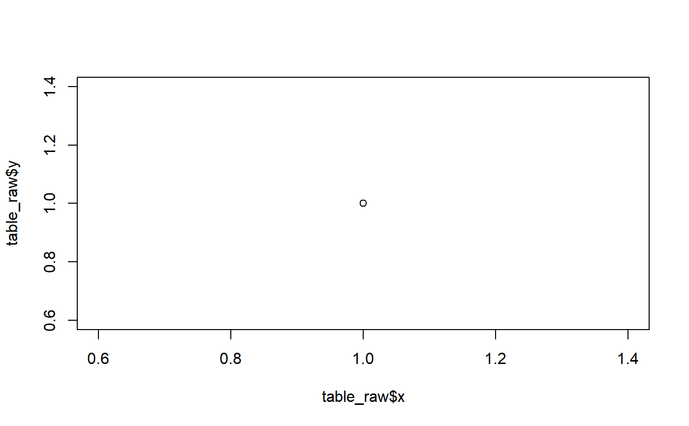

Reference a figure, table, or equation with an anchored tag
crossref(list_obj, nickname, sublist = "number", exact = TRUE, text = TRUE)A list object created by list_figures or list_tables.
A unique string that is used to identify the plot or table in list_figures or list_tables, respectively.
A string of the sublist in list_figures or list_tables you want the contents returned from.
T/F. If TRUE, 'nickname' must match the name of the list item exactly. If FALSE, crossref will return all entries with that string fragment. Default = TRUE.
T/F. If TRUE, will output results prepared for a text output. If FALSE, will output each element. Default = TRUE.
The item in the list.
list_figures <- c()
table_raw <- data.frame(x = 1, y = 1)
pp <- plot(x = table_raw$x, y = table_raw$y)

list_figures <- NMFSReports::save_figures(
figure = pp,
list_figures = list_figures,
header = "blah blah blah",
nickname = "example_1", # a unique name you can refer back to
cnt_chapt_content = "003",
cnt = "012")
list_figures <- NMFSReports::save_figures(
figure = pp,
list_figures = list_figures,
header = "blah blah blah",
nickname = "example2", # a unique name you can refer back to
cnt_chapt_content = "003",
cnt = "013")
list_figures
#> $example_1
#> $example_1$caption
#> [1] "Figure [012](){#example_1}. blah blah blah."
#>
#> $example_1$header
#> [1] "Figure [012](){#example_1}. blah blah blah."
#>
#> $example_1$nickname
#> [1] "example_1"
#>
#> $example_1$alttext
#> [1] ""
#>
#> $example_1$number
#> [1] "012"
#>
#> $example_1$footnotes
#> [1] ""
#>
#> $example_1$filename
#> [1] "003_fig_012"
#>
#>
#> $example2
#> $example2$caption
#> [1] "Figure [013](){#example2}. blah blah blah."
#>
#> $example2$header
#> [1] "Figure [013](){#example2}. blah blah blah."
#>
#> $example2$nickname
#> [1] "example2"
#>
#> $example2$alttext
#> [1] ""
#>
#> $example2$number
#> [1] "013"
#>
#> $example2$footnotes
#> [1] ""
#>
#> $example2$filename
#> [1] "003_fig_013"
#>
#>
refnum <- crossref(
list_obj = list_figures,
nickname = "example_1",
sublist = "number")
refnum
#> [1] "[012](#example_1)"
print(paste0("Please refer to figure ", refnum,
" to see this figure, not the other figure."))
#> [1] "Please refer to figure [012](#example_1) to see this figure, not the other figure."
# example using a partial phrase with `exact = FALSE`
crossref(
list_obj = list_figures,
nickname = "example_",
sublist = "number",
exact = FALSE)
#> [1] "[012](#example_1)"
# using a wildard with `exact = FALSE`
crossref(
list_obj = list_figures,
nickname = "example*1",
sublist = "number",
exact = FALSE)
#> [1] "[012](#example_1)"
crossref(
list_obj = list_figures,
nickname = "example*",
sublist = "number",
exact = FALSE,
text = FALSE)
#> [1] "[012](#example_1)" "[013](#example2)"
refnum <- crossref(
list_obj = list_figures,
nickname = "example*",
sublist = "number",
exact = FALSE,
text = TRUE)
refnum
#> [1] "[012](#example_1) and [013](#example2)"
print(paste0("Please refer to figure ", refnum,
" to see this figure, not the other figure."))
#> [1] "Please refer to figure [012](#example_1) and [013](#example2) to see this figure, not the other figure."